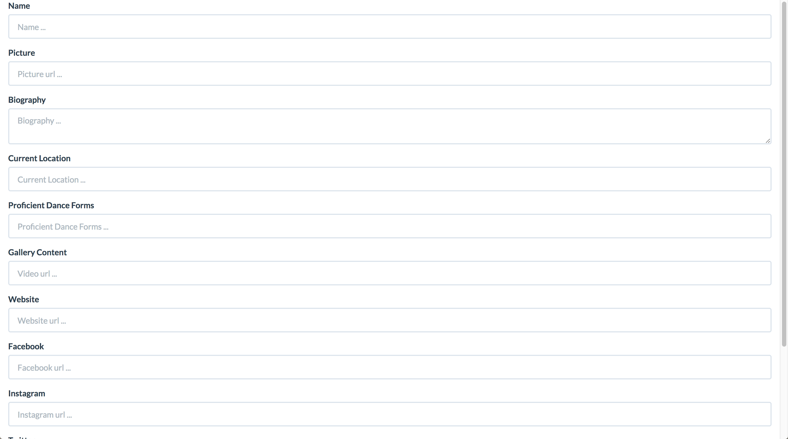
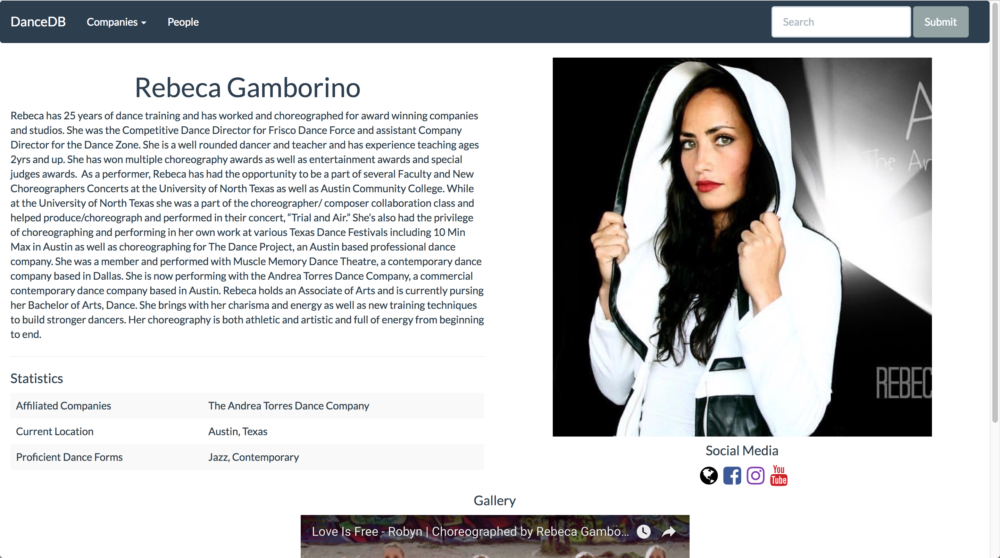
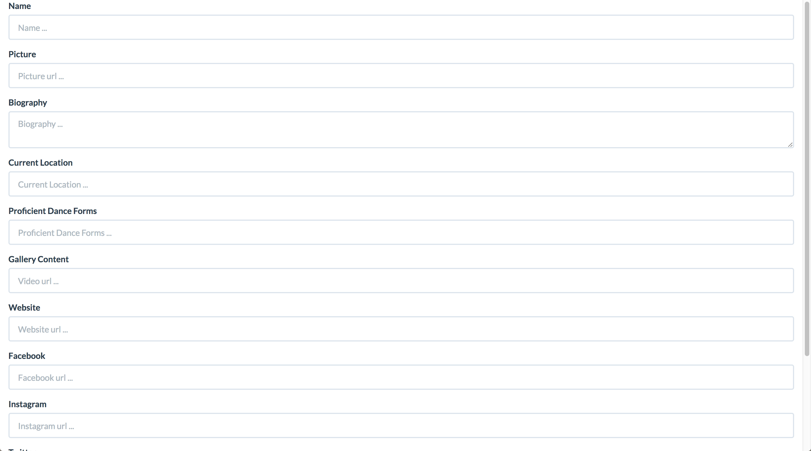
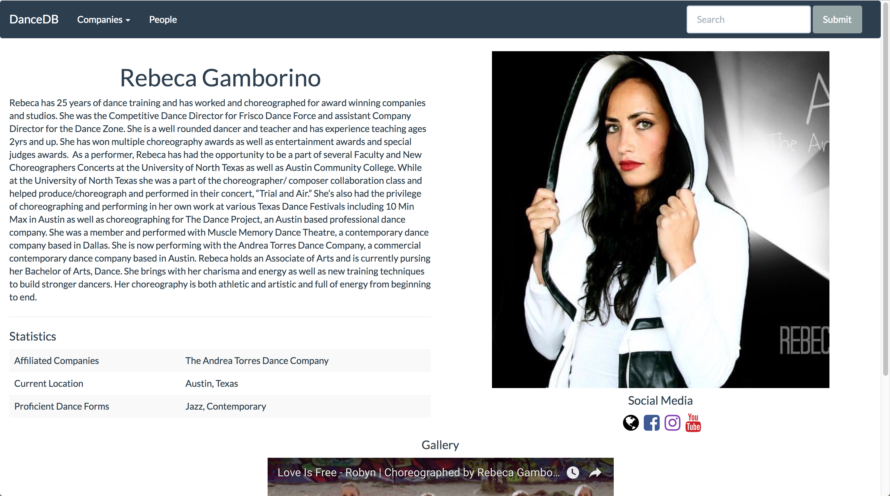

Photo by Lawrence Peart
ABOUT
Georgina Garza is a recent graduate from The University of Texas at Austin, where she pursued the simultaneous majors of B.A. Dance and B.S.A. Computer Science. She soon will be moving to Seattle, WA to be a full-time Software Engineer for Stripe, with previous internships at JPMorgan & Chase and CDK Global. Her particular interests and experience fall under Web Development (Full-Stack), Mobile App Development (iOS & Android), and Machine Learning technologies.
EMPLOYMENT
WEB DEVELOPMENT
Personal Project - In progress
A web application that automates a dance audition process including sign-in, casting, and emails.
{ React, GraphQL, WebSocket }
Find Out MoreInternship Project - Summer 2019
A web application to automate the verification of a data schema in an Excel file against an existing Oracle Database.
{ Angular, Java-Springboot, SQL/Avro }
Find Out MorePersonal Project - Summer 2018
A web application that curates a playlist based on a tempo and adds it to a user's spotify account.
{ Python/Flask, Spotify API (OAuth), Javascript }
Find Out MorePersonal Project - Spring 2018
A web application to represent various statistics, maps, and predictions about San Francisco Dispatch data.
{ Python/Flask, MongoDB, Google Maps API }
Find Out MorePersonal Project - Updated Spring 2020
A website for personal use. Displays various information about self, through static webpages
{ HTML/CSS }
Find Out MoreClass Project - Fall 2018
A web application used for seeking non-profit organizations and opportunities.
{ Python/Flask, React, RESTful API }
Find Out MoreHackathon Project - Spring 2018
A drag & drop style website that helps users create the backend of a website.
{ Python/Flask, Bootstrap, MongoDB }
Find Out MorePersonal Project - Fall 2017
An IMBD-type web application to represent data about dancers, companies, and performances.
{ Python/Flask, Spotify API (OAuth), Javascript }
Find Out MoreMOBILE DEVELOPMENT
Class Project - Spring 2020
An game app for iOS and Android which has users guess which tweets are real and which are fake.
{ React Native, Firebase, GPT 2 }
Find Out MoreClass Project - Spring 2020
An Android app to allow users to suggest and look for locations around them.
{ Kotlin, Firebase, Google Maps API }
Find Out MoreClass Project - Spring 2019
An iOS app to allow pet owners to connect with other pet owners and set up play dates using a Tinder-esque interface.
{ Swift, Firebase, Geofire, Koloda }
Find Out MoreHackathon Project - Summer 2018
A mobile website to read barcodes and automatically purchase items, deducting funds from your bank account.
{ Javascript, QuaggaJS, Google Maps API }
Find Out MoreMACHINE LEARNING
Company Hackathon - Summer 2018
Generated a description based off a car's images and features, which are grabbed from the car's vin, and sent to custom API.
{ Deep Learning, CDK Vin API, Python, Docker }
Find Out MoreClass Project - Spring 2019
OTHER
Class Projects - Spring 2018
Taking a basic Operating System and implementing necessary portions to make efficient.
{ C }
Find Out More


 


